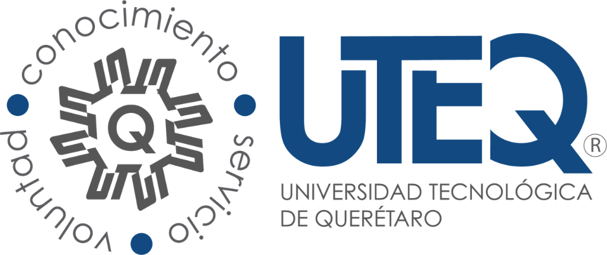
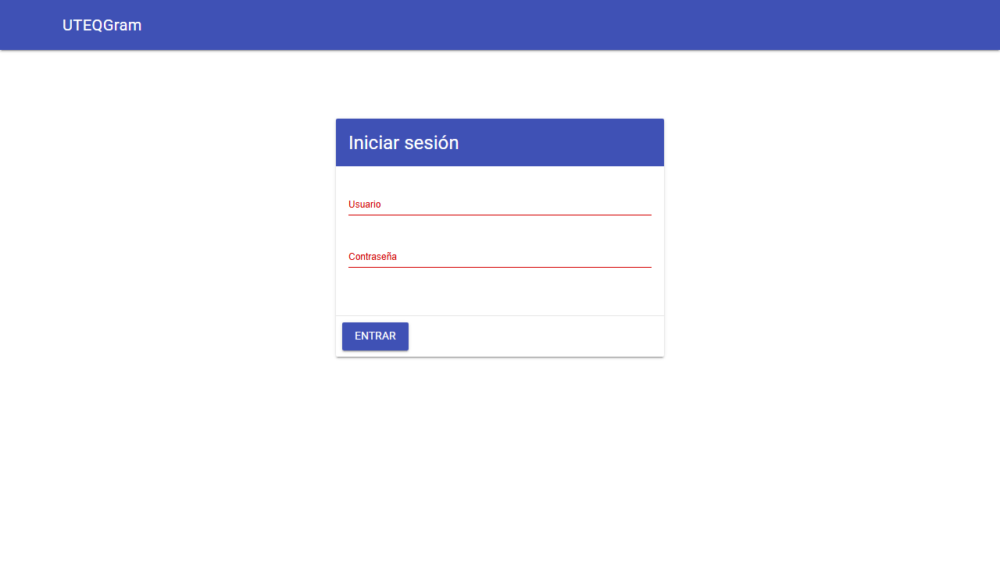
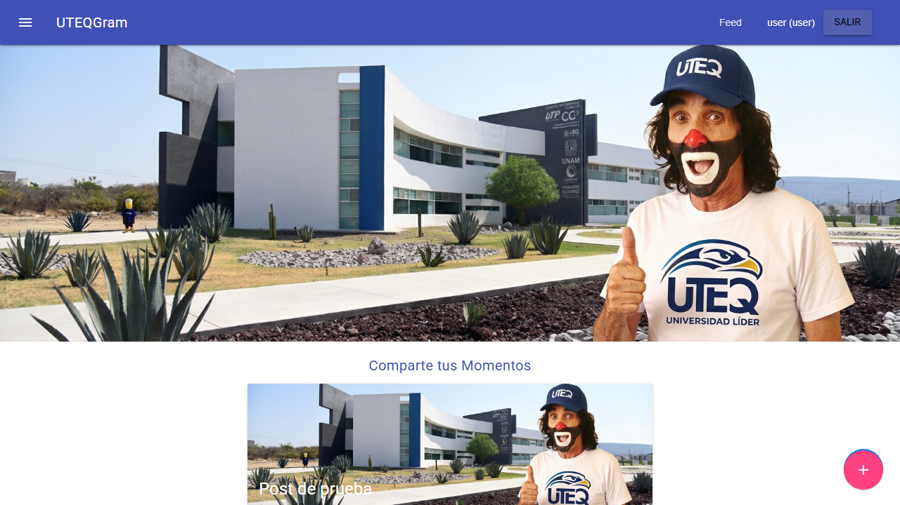
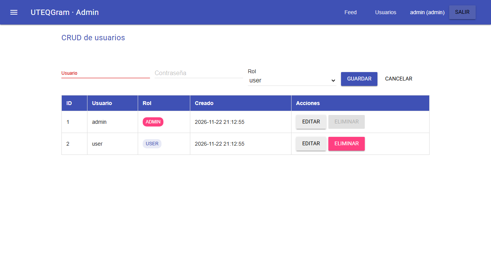
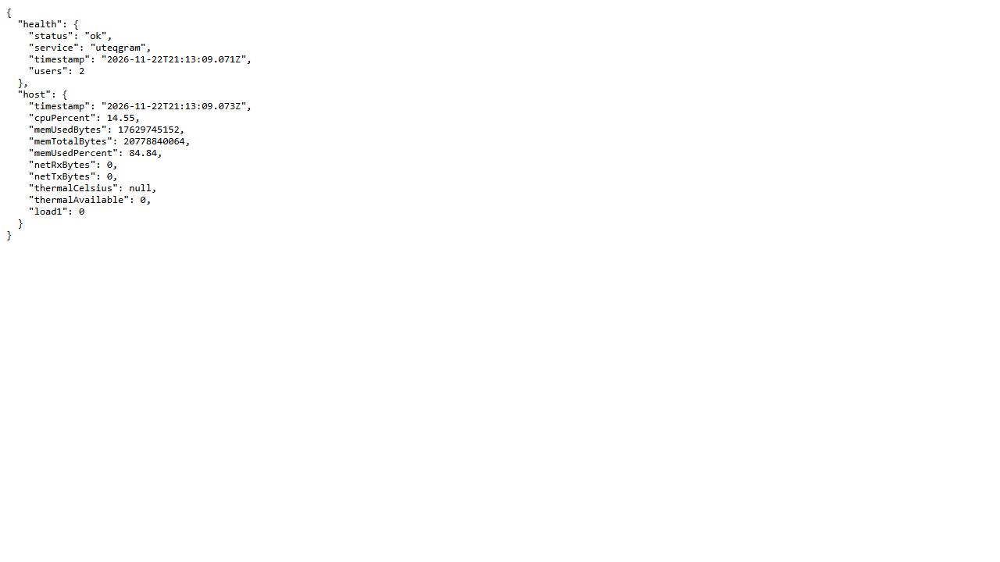
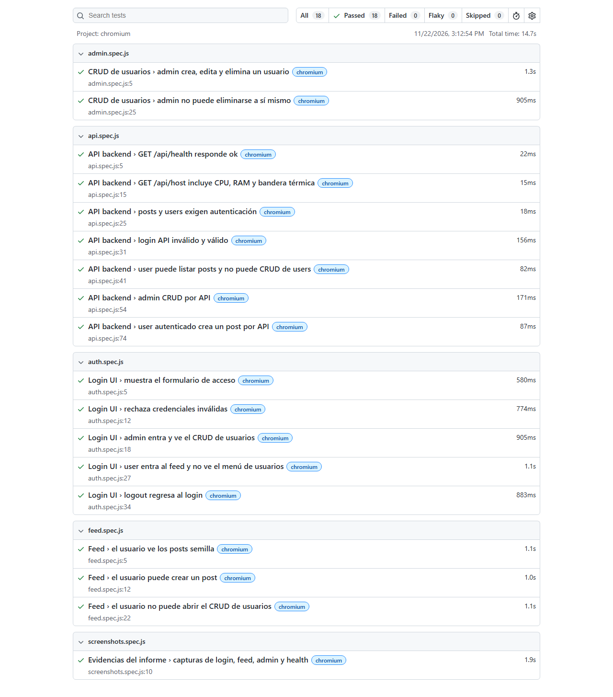

Universidad Tecnológica de Querétaro
Este proyecto cubre la especificación del Proyecto Parcial 2: una aplicación con frontend y backend, pruebas de extremo a extremo con Playwright, un pipeline de GitHub Actions que solo despliega en AWS EC2 cuando las pruebas aprueban, e instrumentación OpenTelemetry hacia OpenObserve (registros, métricas, trazas y recursos del servidor).
La base visual es UTEQGram, la PWA de la materia de aplicaciones web progresivas. Esa versión era estática, usaba Supabase para el feed y no tenía login. En esta entrega se recortaron Firebase, el Service Worker y las claves de Supabase. Se añadió un API en Node.js con SQLite, autenticación JWT en cookie httpOnly y dos roles: user (feed de posts) y admin (CRUD de usuarios).
Implementar un flujo de integración y despliegue continuo hacia EC2, condicionado a Playwright, con observabilidad centralizada en OpenObserve. La aplicación debe exponer login, posts y administración de usuarios sobre SQLite, de modo que las trazas cubran petición HTTP y consulta a base de datos.
| Id | Implementación |
|---|---|
| RF-01 | Playwright (Chromium) sobre UI y API: login, feed, CRUD, 401/403 y /api/health. |
| RF-02 | Workflow .github/workflows/ci-cd.yml: el job deploy usa needs: test y no corre si Playwright falla. |
| RF-03 | Job notify (if: always()) envía a OpenObserve status, sha, ref, actor y run_id; el deploy registra un evento aparte. |
| RF-04 | SDK OpenTelemetry Node: logs JSON, histograma de latencia, contadores por statusCode y spans SQLite. |
| RF-05 | node-exporter + métricas host.* (CPU, RAM, red, temperatura si el kernel la expone). |
| RF-06 | OpenObserve en el mismo Compose (puerto 5080) para logs, traces, metrics y streams cicd/deploy. |
El Compose local y de EC2 levanta cuatro servicios: uteqgram (Express + SQLite + archivos de imagen), otel-collector (OTLP y scrape de Prometheus), node-exporter y openobserve. La aplicación exporta OTLP a http://otel-collector:4318; el collector reenvía a http://openobserve:5080/api/default con autenticación Basic.
Los datos viven en un volumen Docker (/data/app.db y /data/uploads). El frontend Material se sirve desde public/. Las rutas HTML aplican la misma política que el API: sin sesión se redirige a /login; un user que pide /admin/users vuelve al feed.
La rúbrica pide incluir las credenciales del sistema y de OpenObserve. Son las de demostración sembradas al arranque; no se deben reutilizar fuera de la práctica.
| Sistema | Usuario | Contraseña |
|---|---|---|
| UTEQGram (admin) | admin | Admin123! |
| UTEQGram (user) | user | User123! |
| OpenObserve | admin@uteqgram.local | OpenObserve123! |
El rol user entra al feed. El rol admin entra a /admin/users. Las contraseñas se almacenan con bcrypt; el API nunca devuelve password_hash.
El código fuente de esta entrega está en la carpeta proyecto-parcial-2/ del workspace de DevOps. El workflow de GitHub Actions ya está en .github/workflows/ci-cd.yml. El alta del remoto público y de la instancia EC2 se documenta en deploy/ec2-setup.md (Docker, security group 22/80/5080 y secretos EC2_HOST, EC2_USER, EC2_SSH_KEY, OO_URL, OO_USER, OO_PASSWORD).
Cuando existan, los enlaces de revisión en clase son:
proyecto-parcial-2/.http://<EC2_PUBLIC_IP>/loginhttp://<EC2_PUBLIC_IP>:5080La suite se ejecuta con npx playwright test. Un servidor efímero (tests/start-e2e.js) borra data/e2e.db, siembra admin/user y tres posts, y desactiva OpenTelemetry para no depender de OpenObserve en CI.
En esta máquina el resultado fue 18 passed (login UI, feed, CRUD, API 401/403, health/host y capturas). El reporte HTML del framework queda en playwright-report/.
El criterio de aceptación del commit con error intencional se demuestra así: alterar un texto visible o el status esperado de /api/health, hacer push a main, observar Playwright en rojo, el evento ci_test/failure en OpenObserve y la ausencia del job SSH. Al revertir, el deploy actualiza contenedores y se registra event=deploy.
Cada petición HTTP escribe un log JSON con timestamp, level, msg, route, statusCode, durationMs y traceId. Las métricas http.server.duration y http.server.requests etiquetan método, ruta y código. Los accesos SQLite abren un span sqlite.query* con db.statement.
/api/host expone CPU, RAM, bytes de red y temperatura. En Windows y en muchas instancias EC2 virtualizadas thermalAvailable vale 0 porque no existe /sys/class/thermal; no se inventa un sensor. En Linux bare-metal o si el kernel publica thermal_zone*, la métrica host.thermal.celsius toma ese valor. El ancho de banda sale de /proc/net/dev y de node-exporter (node_network_*_bytes_total).
Las capturas se tomaron con Playwright contra http://127.0.0.1:3000.





UTEQGram dejó de ser una PWA acoplada a Supabase y pasó a un backend propio con SQLite, roles reales (no solo botones ocultos) y un pipeline que bloquea el SSH a EC2 si Playwright falla. OpenTelemetry y OpenObserve cubren los tres pilares de observabilidad más el registro del CI. La temperatura del hypervisor de EC2 es una limitación conocida y queda instrumentada como disponibilidad, no como un valor ficticio.
La operación restante del alumno es crear el repositorio GitHub, la instancia EC2 y cargar los secretos listados en deploy/ec2-setup.md, para completar los enlaces públicos de la rúbrica.